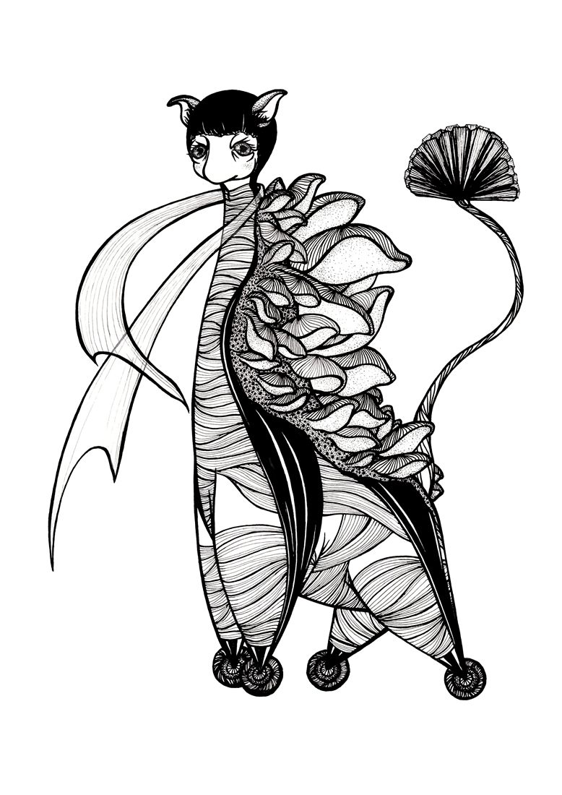
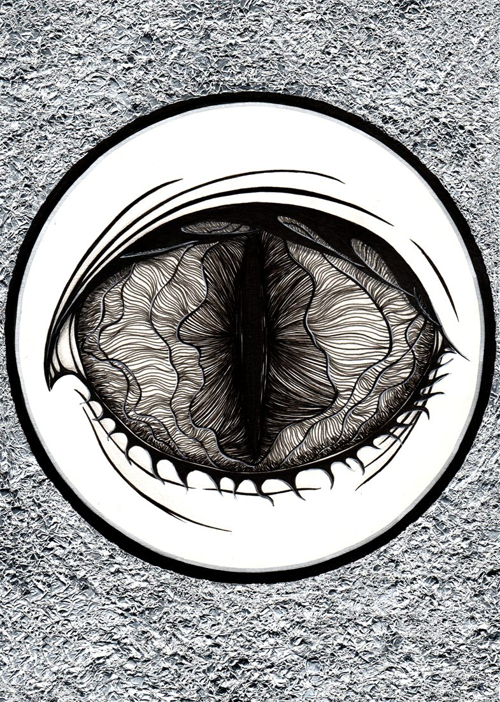
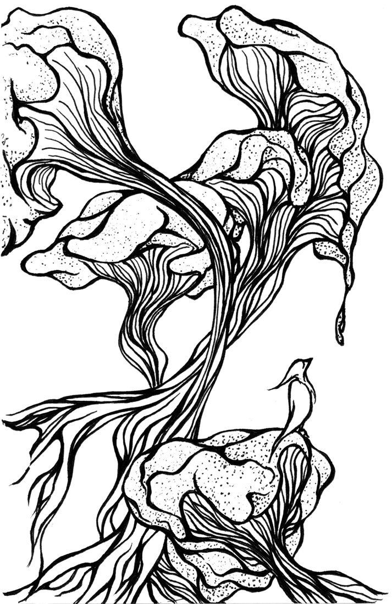
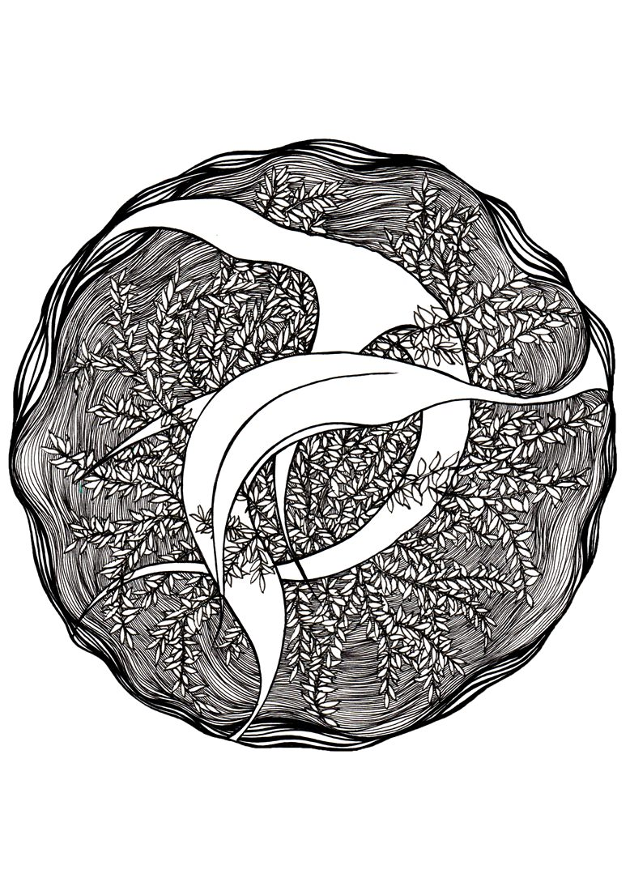
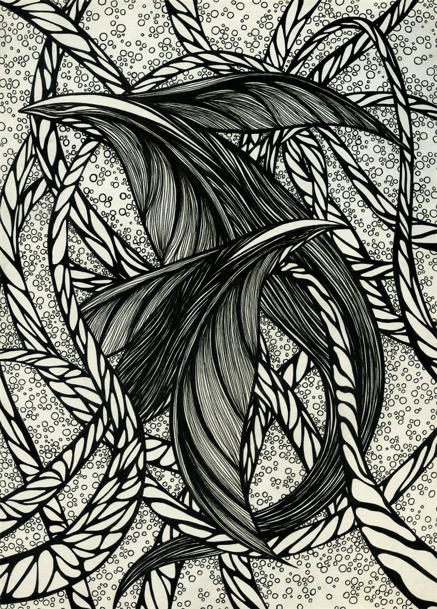
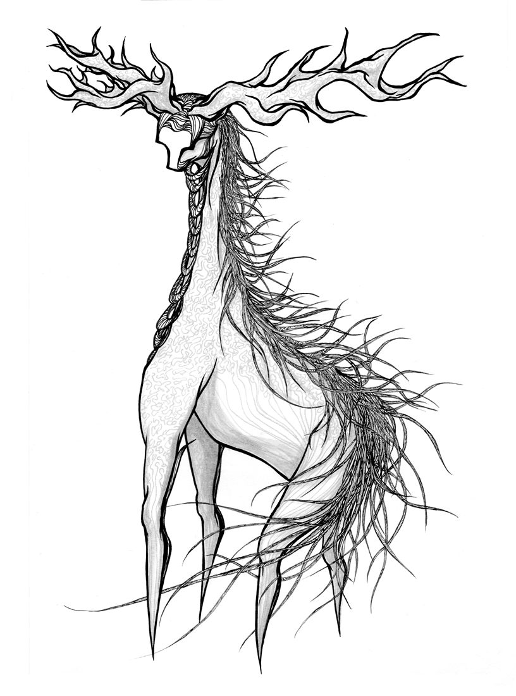

怪物夜未眠……还醒着吗？我睡不着。
它蹲在门口，睁着眼睛，怎么也睡不着。陪它熬过子夜、深夜、凌晨，等到黎明——看看今晚，是谁来过。
这是故事，不是诊断；不舒服请找医生。

子夜 00:00 · 看看它它的舌头、脸色、眼睛、身形——月光底下，照图选最像的那个
深夜 02:00 · 听听它声音、呼吸、咳嗽、嘴里的味道——夜里什么都听得见，选项配有波形图
凌晨 04:00 · 听它说话它终于肯开口了：近来反复出现的，都点亮；没有就留空
黎明 06:00 · 听它心跳把手放在它胸口，光点落到心口时轻拍——连着拍对 8 下，它的眼皮就会往下坠
日出 · 日记天亮了，看看今晚是谁来过；留下一页日记和今晚可以做的一件小事这是故事，不是诊断；不舒服请找医生。
这是故事，不是诊断；不舒服请找医生。